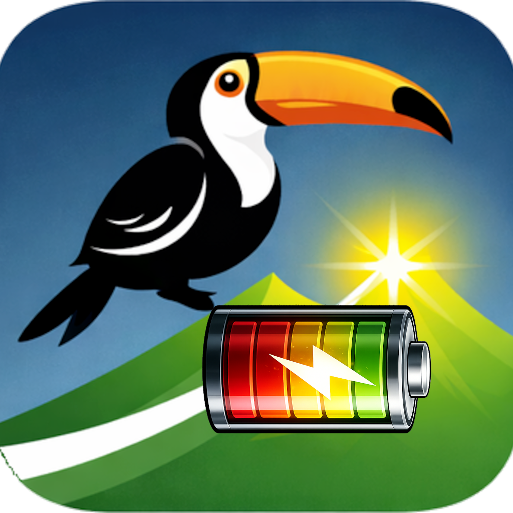

Flagship App
The app is currently in private testing while we refine and forecast confidence and day-to-day guidance.
Our intent is to increase awareness of how the nervous system adapts to daily stressors and training load, enabling more informed and appropriate decisions.
The app is currently in private testing while we refine and forecast confidence and day-to-day guidance.
Reliable insights start with high-quality measurements.
Wearables make data collection convenient, but many rely on aggressive signal smoothing and simplified calculations that can compromise timing precision.
We focus on trustworthy raw data and robust backend processing to support meaningful readiness assessment and guidance.
PeakElite is available through a private beta focused on readiness trends, confidence validation, and daily load feedback.
Learn about the betaRecord training sessions live for real-time feedback or offline for post-session analysis. Designed for structured endurance workouts and high-quality physiological data capture.
Session data feeds into PeakElite to support a more comprehensive, 360° view of the athlete across training, recovery, and readiness.
In development and planned for future beta testing.
PeakSauna brings intelligent guidance to your sauna sessions.
Traditional sauna timers only track time. PeakSauna goes further by monitoring how your body responds to heat in real time. PeakSauna monitors your heart rate response during your session and analyzes how your body reacts to heat. By detecting changes in cardiovascular strain, the app provides smart prompts to help you safely enjoy your sauna experience.
In development and planned for beta testing.

PeakBattery helps you check the battery level of your essential training devices in one place. Heart rate monitors, power meters, CORE, Stryd, and other compatible sensors can be difficult to manage across multiple apps. PeakBattery gives athletes a faster, simpler way to stay on top of their gear and avoid unexpected battery failures before training or racing.
Designed as a lightweight utility app, PeakBattery focuses on speed, clarity, and convenience - so you can spend less time managing devices and more time training.
Feature in the pipeline for future beta testing.